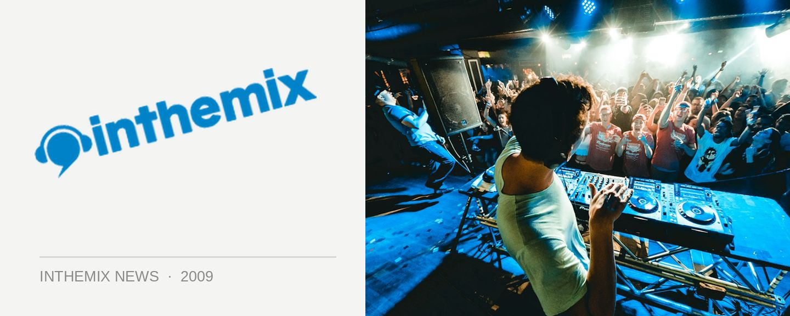

Bloody Beetroots smashing up the Onelove stereo
If you put Italian noise merchants the Bloody Beetroots and the word ‘smash’ in the same sentence together, it’s not that hard to imagine the duo wrecking the crap out of some inanimate object, or otherwise causing mayhem. After all, we’re used to them creating all types of mayhem of the sonic variety. It’s fitting then they’ve been announced to helm the latest Onelove compilation Smash Your Stereo 2009 which will be demolishing your stereo when it hits the record shelves early next month.
The Bloody Beetroots will be helming the ‘Backroom Disc’, alongside fellow international guest from the UK Juan Kidd (who is also set for a national tour) and Melbourne’s own Andy Murphy. According to the crew from Onelove, not only do the insane duo rock things out with their mix – they break it into bloody little pieces. And then they stamp and grinding those pieces into the sticky nightclub carpet. You should definitely be afraid.
The news follows a whole lot of love that has already been shown for the Bloody Beetroots by Australian punters. They have already completely sold out their Sydney and Melbourne shows on their six-date national tour that kicks off later this month, and the collective wails of anguish were only sated when it was announced last week they would be back in October as part of the Stereosonic national tour (read all about it here).
Onelove’s Smash Your Stereo 2009, mixed by Bloody Beetroots, Juan Kidd and Andy Murphy, is out July 10th. Bloody Beetroots will be playing the following shows across the country…
Thurs Jun 25 – Family, Brisbane
Fri Jun 26 – Prince of Wales, Melbourne (SOLD OUT)
Sat Jun 27 – Thebarton Theatre, Adelaide
Sun Jun 28 – Lot 33, Canberra
Wed Jul 1 – La La Land, Byron Bay
Fri Jul 3 – The Metro, Sydney (SOLD OUT)
Sat Jul 4 – Villa, Perth
The UK’s Juan Kidd will also be touring in support of Smash Your Stereo 2009...
Fri July 3 – Perth, Limelight, Onelove
Sat July 4 – Melbourne Onelove
Fri July 10 – Canberra
Sat July 11 – Sydney Onelove
Sun July 12 – Byron bay la la land
Thurs July 16 – Brisbane, Monastery
Fri July 17 – Adelaide, Electric circus, Onelove
Sat July 18 – Gold coast, Platinum
And you want proof that the Bloody Beetroots like to smash the crap out of stuff? Check out the video proof below…